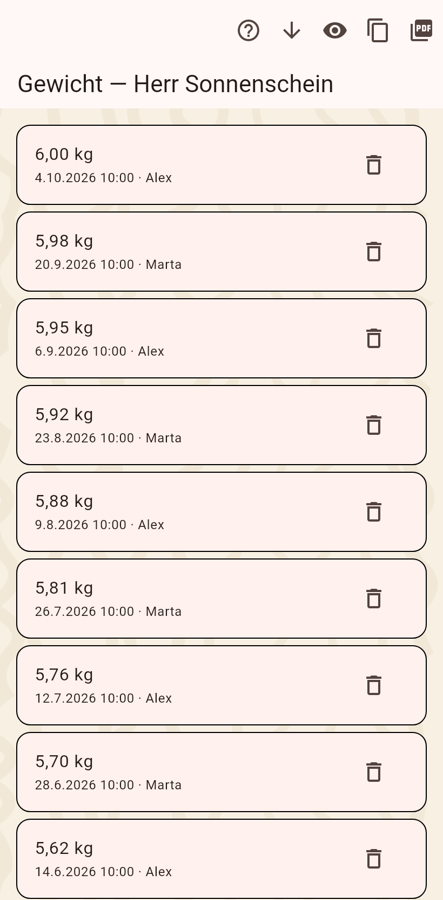

Jede Änderung bleibt erhalten. Der Verlauf eines Feldes listet seine Werte, die Zeitleiste alles über eine Katze oder ein Zuhause der Reihe nach, und der Verlauf einer Zahl wird als Kurve gezeichnet.

Die Werte eines Feldes über die Zeit, neueste zuerst, jeder mit Datum und Autor. Ein Tipp korrigiert einen Wert: der neue tritt an seine Stelle, der alte wird ausgeblendet. Der Papierkorb entfernt einen Wert, der Pfeil holt einen ausgeblendeten zurück, das Auge zeigt ausgeblendete Werte. Kopiere die Liste als Text oder teile sie als PDF.
Alles, was einer Katze oder einem Zuhause je geschah, neueste zuerst: Werte, Fotos, Umzüge, Aufgaben-Haken, Termine. Ein Tipp auf einen Umzug öffnet den Umzugsdialog auf diesen Umzug eingestellt; ein Termin oder eine Aufgabe öffnet ihren Editor; der Erledigt-Tag einer Aufgabe öffnet ihr Protokoll.
Eine Zahl oder ein Messwert, vor allem das Gewicht, als Kurve mit den gemessenen Punkten, einer geglätteten Linie und einem Trend, über eine Woche, einen Monat, ein Jahr, alles oder einen eigenen Bereich. "Als Bild kopieren" legt es für einen Messenger in die Zwischenablage.